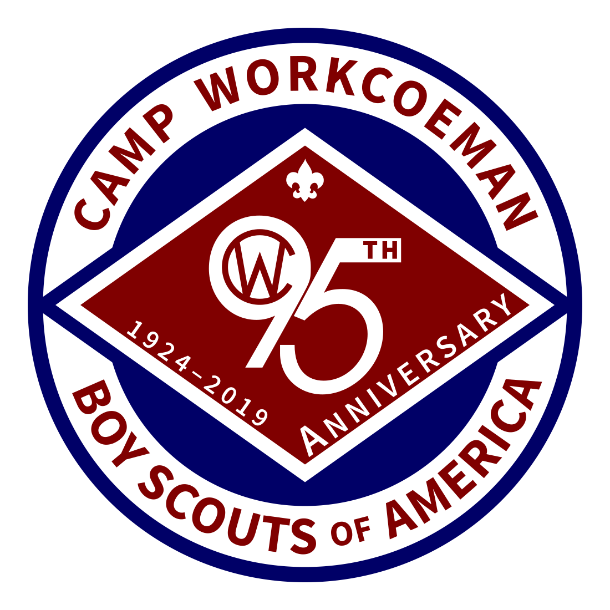

Camp Workcoeman is used year-round for short-term camping for all Scouting Cub Packs, Scout Troops, and Venture Crews, as well as for district and Order of the Arrow activities.
During the six week summer camp season, over 1,200 Scouts enjoy unforgettable Scouting experiences. The summer camp season consists of 5 weeks of Boy Scout Resident Camp and one week of Webelos Resident Camp and Cub Scout Day Camp. It is also home to Laurel Music Camp.

News & Events
{% for post in site.posts limit: 3 %}
{{ post.title }} {{ post.date | date_to_string }}
{{ post.content | markdownify }}
{% endfor %}
More news »
Why should your troop attend summer camp at Camp Workcoeman?
-
A Quality Program
A flexible program, tailored to the needs of your troop from the new Scout to the veterans.
-
A Dedicated Staff
A Camp Director with {% lou_years %} years experience and a trained, high quality staff that return every year. Flexibility, caring, and dedication are the essential qualities that make up the Camp Workcoeman Staff.
-
A Consistent Philosophy
You want the best summer program, and the staff is here to deliver the finest program available to your Scouts!
{% include sidebar.html %}
{% include footer.html %}